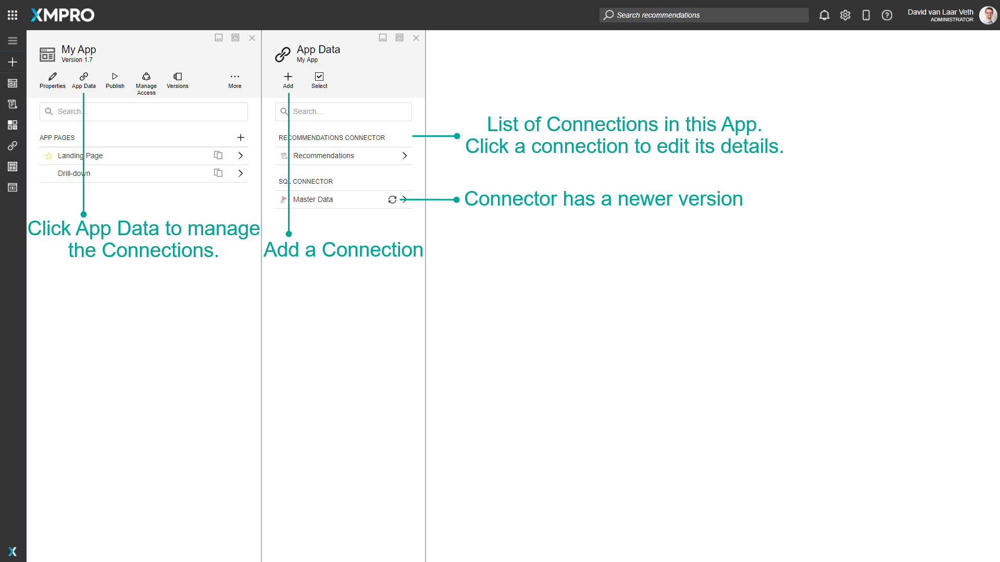
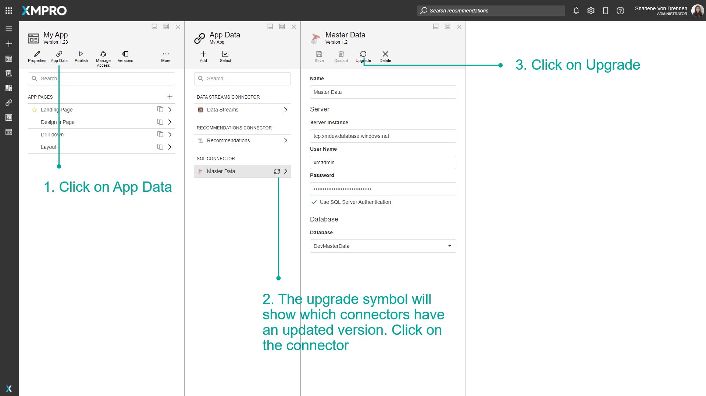
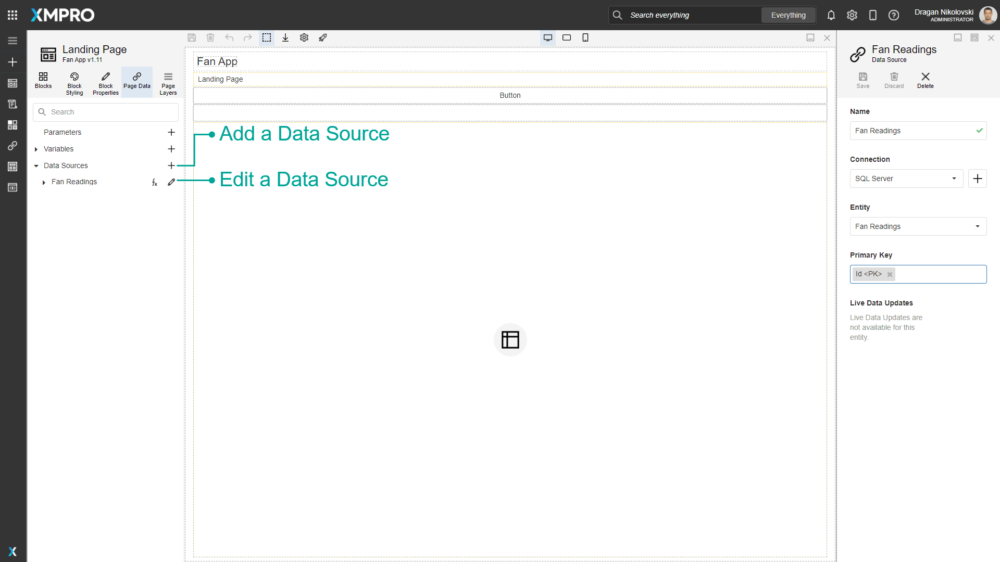
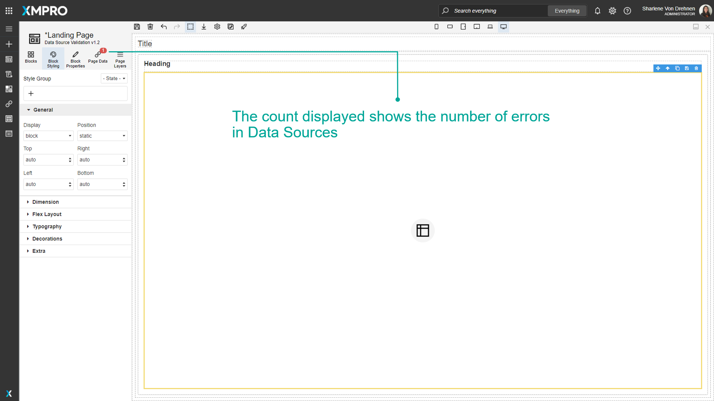
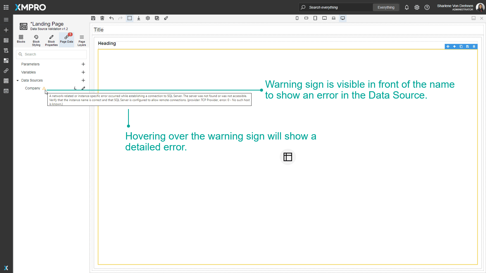
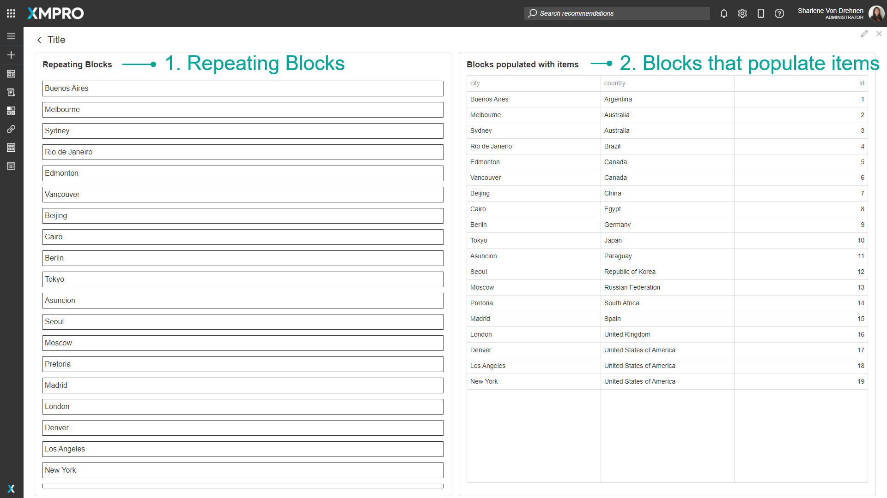
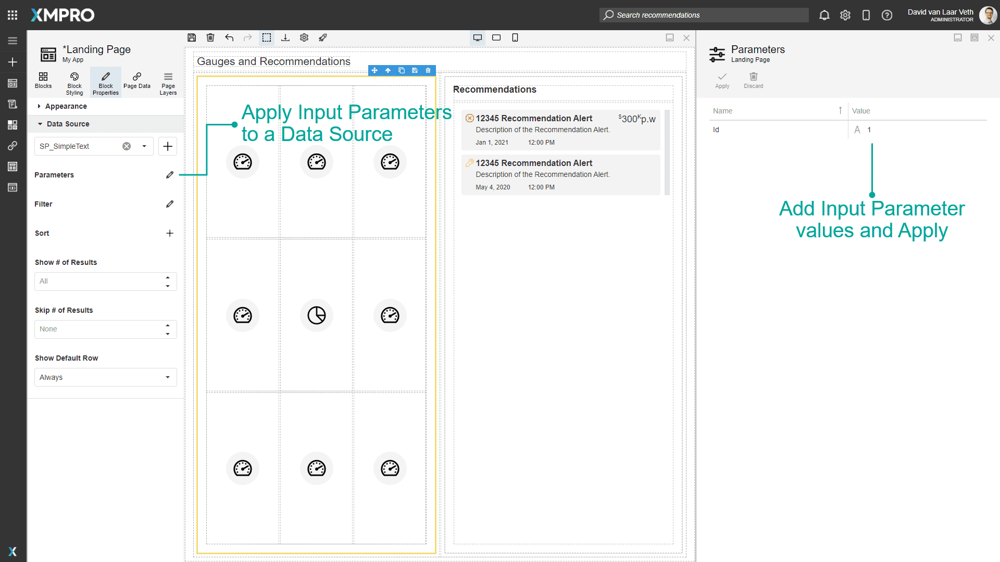
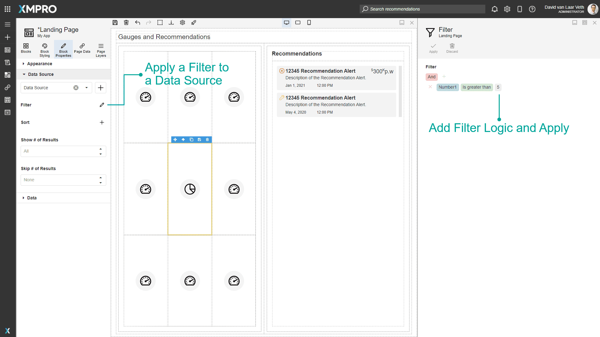
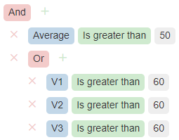
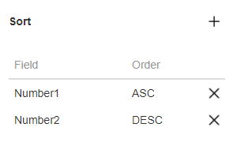

Data Integration
Data Integration refers to connecting an Application to a source of data, be it a database, a Data Stream, a Recommendation, or something else. Data Integration is needed if you want to display any real-time or context data to the user, such as through statistics or graphs.
The App has a number of Data Sources, which connect to a source of data through a connector, using the parameters defined in a Connection.
App Designer Connector
Connectors allow you to connect to third-party sources of data. You can assume that Connectors have already been set up by your Company Administrator. See the Connectors article for more details on Connectors.
XMPro has a library of Connectors available to use. To acquire any of these Connectors, please contact your XMPro sales representative or write to us at support@xmpro.com. Alternatively, since Connectors can be written by anyone that has some knowledge of programming and has access to the required technologies, you can write your own Connector by following these instructions.
Connection
The parameters defined in a Connection allow the App to connect to a source of data like a SQL Database and expose the entities as Data Sources within the Page. Connection parameters can include credentials such as a username, password, path, URL, or location identifier that you can use to make a remote connection to the Data Source. For example, connection parameters to connect to an SQL Database would include the Server Name, Authentication type, Username, and password.
A new App will have the Recommendations Connector and the Data Stream Connector by default. Connections are managed in an App by clicking the App Data command. Any Connections that were created with an older version of a Connector will have an upgrade icon.

The properties of a Connection are dependent on the type of Connector. To see the properties of a Connection, click the Connector in the list of Connectors above.
Upgrade the Connection
If the Connector has a newer version, an upgrade icon will appear on the App Data list indicating that the Connection can be upgraded, and the Upgrade action will become available. This upgrades the Connection to use the latest uploaded version of the Connector.

Data Source
Data Sources are a link to a specific Entity in a Connection's Entities, for example, a table in a SQL database. Data Sources are managed through the Page Data tab of a Page. You can add a new Data Source by clicking on the + button to the right of the Data Sources heading, and edit a Data Source by clicking on the pencil button to the right of the Data Source.
If the Connection has the ability to have Live Data Updates, the checkbox will be visible. If checked, the Data Source will automatically update the Blocks when new data becomes available without refreshing the Page.
Primary Key
A primary key is the column or columns that contain values that uniquely identify each row in a table. Without a primary key, we cannot update, insert or delete data in the table. The Primary Key is a required field and cannot be empty. If the selected Entity has a Primary Key it will be specified automatically in the Primary Key field otherwise it has to be specified manually by selecting one or multiple columns from the list.
Data Source Validation

A Data Source may become invalid due to several issues. The most common ones can be expired passwords, deleted entity or unreachable servers. If a Data Source becomes invalid a count will be visible on the Page Data tab to notify the user.

If you click the Page Data tab of the page, an exclamation mark will be visible in front of the Data Source name and hovering over the exclamation mark will show a detailed error.

Data Source in the Page Blocks
A Data Source may be attached to many Blocks. Blocks that allow Data Sources to be attached have a section in Block Properties called Data Source.
If a Data Source is applied to a Block, depending on what type of Block it is, it will either repeat itself or repeat its child elements per the number of rows of the Data Source or use the data to populate its items or visualization.
For example:
- Repeating Blocks will display a single record in each block, and a new block will be created for every record in the data source. All blocks will be created with the same styling as the first one.
- Blocks that populate items will display all records in a single Block.

The parameters of the Data Source are then made available to its Action if it allows one, and all its descendants' Dynamic and Quick Expression value bindings.
List of Data Source Blocks
The following Blocks populate their items or visualization with rows from the Data Source.
- Accordion
- Autodesk Forge
- Chart
- D3 Visualization
- Data Grid
- Dropdown Grid
- List
- Lookup
- Pie Chart
- Pivot Grid
- Polar Chart
- Radio Buttons
- Select Box
- Sparkline
- Tabs
- Tags
- Templated List
- Tree Grid
- Tree List
- Unity
The following Blocks repeat themselves/create a new block for each record in the Data Source:
- Box & Data Repeater Box
- Card & Content Card
- Fieldset
- Horizontal Stacked Layout
- Vertical Stacked Layout
Parameters
If a Data Source has Input Parameters, the Parameters option will be available. Here you can add a Static or Dynamic Value to each Input Parameter.

Filter
A Filter may be applied to the Data Source on the Block, which will then only retrieve data that matches the Filter.

You can add new conditions or groups by clicking the + button. Groups can be nested within each other to create advanced logic. In an "And" group, all the conditions must be true, and in an "Or" group, only one of the conditions must be true to trigger an Alert.
As an example, in the following Filter, both of the following must be true for the data:
- Average must be greater than 50,
- And V1, V2, or V3 must be greater than 60.

Sort
You can sort the data by any field in ascending or descending order.

Show/Skip
You can choose to only retrieve a certain number of items and/or skip a certain number of items by adding values to Show # of Results and Skip # of Results.
Show Default Row
If the control is of the type where the block repeats itself/creates a new block for each record, the Show Default Row option will be available. This defines whether an empty row will be added at the end of the rows received from the Data Source, allowing you to insert a new row into the Data Source.
Further Reading
- How to Create and Manage Connections
- How to Create and Manage Data Sources
- How to use Data Sources in the Page
Last modified: July 16, 2025